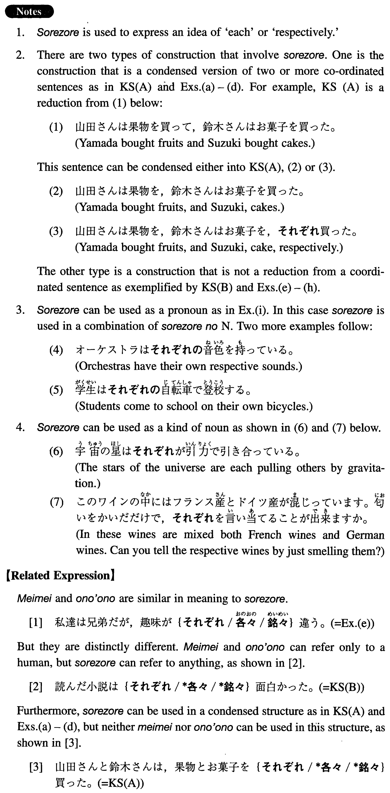

それぞれ (I. 436)
- (ksa).
- 山田さんと鈴木さんは、果物とお菓子をそれぞれ買った。
- Yamada and Suzuki bought fruits and cakes, respectively.
- (ksb).
- 読んだ小説はそれぞれ面白かった。
- Each of the novels I read was interesting (in its own way).
- (a).
- 好子、美保子、信夫はそれぞれ十五歳、十三歳、九歳です。
- Yoshiko, Mihoko, and Nobuo are 15, 13, and 9 years old, respectively.
- (b).
- 父は私と妹に、それぞれ、一万円のお小遣いをくれた。
- Father gave me and my younger sister a 10,000 yen allowance each.
- (c).
- トムは寮の部屋で、僕は図書館で、それぞれ勉強する。
- Tom and I study in the dorm room and at the library, respectively.
- (d).
- ボブはベスと、一雄はジェミーと、それぞれ出かけた。
- Bob and Kazuo went out with Beth and Jemmy, respectively.
- (e).
- 私達は兄弟だが、趣味がぞれぞれ違う。
- We are brothers, but each of us has different interests.
- (f).
- 誰でもそれぞれ長所と短所がある。
- Each of us has our strengths and weaknesses.
- (g).
- このキャンパスの建物はそれぞれ個性がある。
- Each of the buildings of this campus has its own individuality.
- (h).
- レストランではそれぞれ好きな物を食べました。
- At the restaurant we ate what each of us like.
- (i).
- 裁判官はそれぞれの席に着いた。
- The judges took their respective seats.
